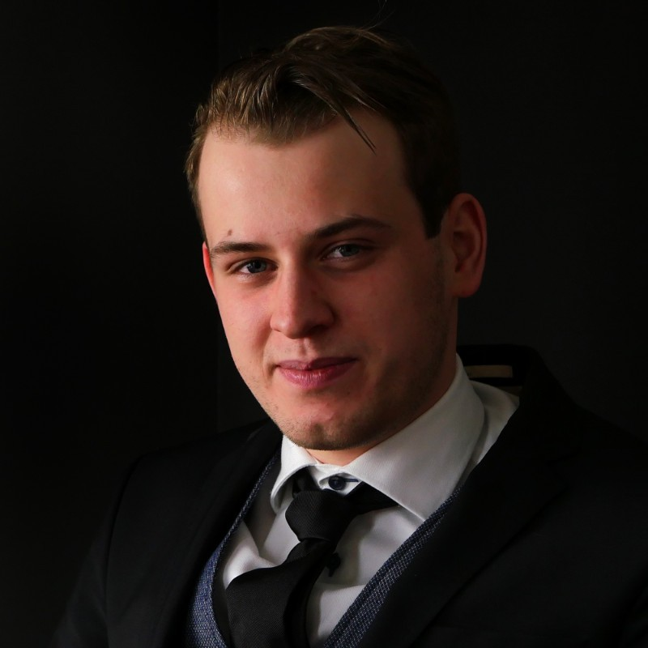

 Email:
Email:
 Website:
Website:
Lars Vonk
Personal details
Email:
info@vonkprogramming.nl
Website:
https://vonkprogramming.nl
Phone:
+31 639119996
+48 788311059
 Address:
Ceintuurbaan 221, 1402HJ, Bussum
Skills
Javascript / Typescript
9 years
Python
6 years
MongoDB
4 years
Vue.js
6 years
Docker
4 years
Education
Computer systems and networks, Warsaw University of Technology, Master's degree,
2023 - Now
HBO-ICT, Windesheim Flevoland, Bachelor's degree, 2016-2020
Cambridge English, Cambridge University, Aug 2016
Certified ScrumMaster, Scrum Alliance, Dec 2022
Languages
Dutch
Native / C2
English
Fluent / C1
Description
I am a highly motivated developer with experience in a wide range of technologies. I am
currently pursuing a master's degree after working for a few years as a full-stack
developer by a wide range of companies. Such as banks, medical companies and government
institutions. I love what I do which can be seen in my open source contributions and the
many side projects I have been working on in the past years. I like to explore the
newest technologies within the field and I am always looking for new ways to improve my
workflow or new programming languages which can improve my skillset.
I am currently looking to work remotely through my company VonkProgramming based in the
Netherlands. Since I am currently studying my hours are very flexible and I am able to
work on a wide range of projects. I don't fear diving into new tech stacks.
To read a more extensive description of my work experience and skills please visit my
website at https://vonkprogramming.nl
Experience
Quintor
Full-stack developer
10-2020 - 09-2023
At 'Quintor' in Amersfoort, Utrecht, Netherlands, from October 2020 to October 2023,
the role mainly involved working on various software development projects for large
clients like ING and different government entities. As part of the experience at
Quintor, a traineeship was also completed. This program emphasized learning and
implementing best practices for code quality through testing and linting
methodologies, which played a significant role in the coding projects.
ING
Full-stack developer
04-2022 - 09-2023
The role at 'ING', in Amsterdam, North Holland, Netherlands, began in April 2022 and
is still ongoing. It primarily involves serving as a full-stack developer, working
on various interfaces that are utilized by ING, employing the Lit element framework.
In addition to these duties, for a certain period, the role also encompassed serving
as a product owner. This required overseeing project timelines, prioritizing
features, collaborating with stakeholders, and making key decisions about product
direction. This multi-faceted role demonstrates a blend of technical acumen and
leadership ability.
SVB
Full-stack developer
04-2021 - 04-2022
At 'SVB', based in Amstelveen, North Holland, Netherlands, the role took place from
April 2021 to April 2022. The primary responsibility involved programming in
JavaScript, utilizing the Angular framework. An important part of the job was
managing a significant transition, migrating an existing system from AngularJS to
Angular. This migration required deep understanding of both frameworks, and
extensive planning to ensure a seamless transition with minimal disruption. In
addition to development work, the role also entailed working on pipelines, which
required careful oversight and management to ensure a smooth, efficient workflow and
continuous delivery.